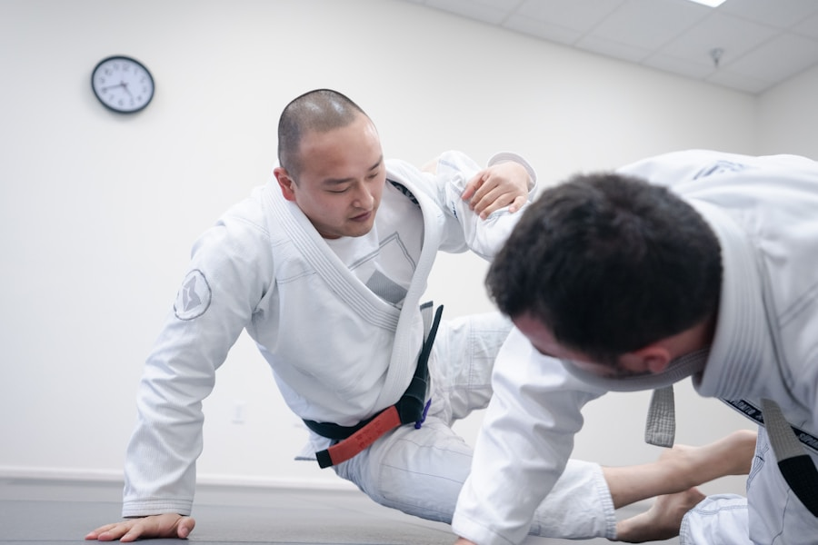

Die sanfte Kunst – effektive Selbstverteidigung für alle

Jiu-Jitsu (auch: Ju-Jutsu) ist eine der ältesten japanischen Kampfkünste und die Mutter vieler moderner Kampfsportarten – darunter Judo, Sambo und Aikido. Das Prinzip: Kraft durch Technik überwinden, nicht durch Kraft kontern.
Beim Kodokan Olsberg unterrichten wir Jiu-Jitsu mit Fokus auf Selbstverteidigung, Hebelgriffe, Würgetechniken und Bodenkampf. Das Training ist für Einsteiger genauso geeignet wie für erfahrene Judoka.
Trainingsstätte: Turnhalle der städtischen Real- und Sekundarschule Olsberg, Bahnhofstraße 59, 59939 Olsberg.
Jiu-Jitsu wurde für die Praxis entwickelt – Techniken funktionieren unabhängig von Größe oder Stärke.
Würfe, Hebel, Würger, Stöße – Jiu-Jitsu vereint alle Distanzbereiche des Kampfes.
Feingefühl, Gleichgewicht und Körperspannung werden systematisch entwickelt.
Kleinere können Größere besiegen – das macht Jiu-Jitsu für alle Altersgruppen und Körpertypen ideal.
Wer Judo trainiert, profitiert enorm vom Jiu-Jitsu-Training und umgekehrt.
Komm einfach zum Probetraining – bequeme Sportkleidung genügt für den Anfang.